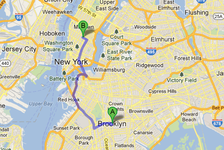
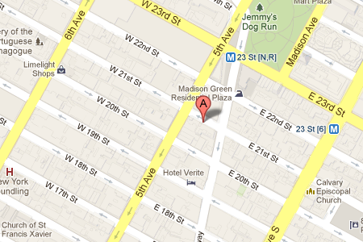

Distance
9.4 miles
Directions
- Head east on Erasmus St toward Nostrand Ave
141 ft
- Turn right onto Nostrand Ave
315 ft
- Take the 1st right onto Snyder Ave
0.2 mi
- Take the 1st right onto Rogers Ave
0.1 mi
- Turn left onto Church Ave
1.2 mi
- Turn right onto Prospect Expy
1.9 mi
- Keep left at the fork, follow signs for I-278 E/Bklyn-Qns Expy/Queens/Bronx and merge onto I-278 E
0.8 mi
- Keep left to continue on Hugh L. Carey Tunnel, follow signs for Battery Tunnel/Manhattan
Toll road
2.2 mi
- Take the exit on the left toward New York 9A N
Partial toll road
0.2 mi
- Turn right onto New York 9A N/West St
Continue to follow New York 9A N
2.8 mi
- Turn right onto W 21st St
Destination will be on the left
69 ft
Your location to GA

W 21 St New York, NY 10011
GA up close
